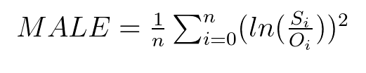

msle¶
-
hydrostats.metrics.msle(simulated_array, observed_array, replace_nan=None, replace_inf=None, remove_neg=False, remove_zero=False)[source]¶ Compute the mean squared log error of the simulated and observed data.
Range: 0 ≤ MSLE < inf, data units squared, smaller is better, does not indicate bias.
Notes Same as the mean squared error (MSE) only use log ratios as the error term. Limits the impact of outliers, more evenly weights high and low values.
Parameters: - simulated_array: one dimensional ndarray
An array of simulated data from the time series.
- observed_array: one dimensional ndarray
An array of observed data from the time series.
- replace_nan: float, optional
If given, indicates which value to replace NaN values with in the two arrays. If None, when a NaN value is found at the i-th position in the observed OR simulated array, the i-th value of the observed and simulated array are removed before the computation.
- replace_inf: float, optional
If given, indicates which value to replace Inf values with in the two arrays. If None, when an inf value is found at the i-th position in the observed OR simulated array, the i-th value of the observed and simulated array are removed before the computation.
- remove_neg: boolean, optional
If True, when a negative value is found at the i-th position in the observed OR simulated array, the i-th value of the observed AND simulated array are removed before the computation.
- remove_zero: boolean, optional
If true, when a zero value is found at the i-th position in the observed OR simulated array, the i-th value of the observed AND simulated array are removed before the computation.
Returns: - float
The mean squared log error value.
References
- Törnqvist, Leo, Pentti Vartia, and Yrjö O. Vartia. “How Should Relative Changes Be Measured?” The American Statistician 39, no. 1 (1985): 43–46.